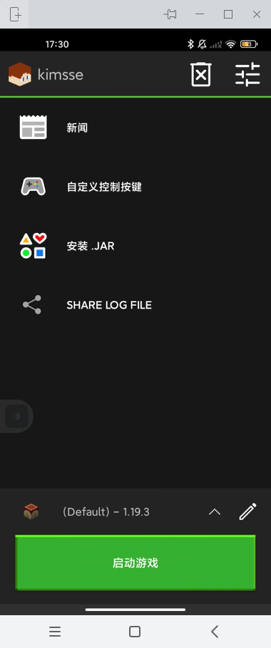

添加账号
你可以根据以下的方法来添加一个本地账号或者是一个正版账号：
离线账号
- 进入APP之后，在第一次启动时可能会需要加载一些基本的资源在少许等待后你便会来到APP的首页。
- 添加一个离线账号： 请点击屏幕最上方的标题栏，这个时候会出现两个选线：Microsoft Account 和 Local Account
- 选择 Local Account，然后继续
- 在接下来的电子邮件或用户名栏里输入你的游戏内玩家名称即可，然后点击登录
正版账号
- 进入APP之后，在第一次启动时可能会需要加载一些基本的资源在少许等待后你便会来到APP的首页。
- 添加一个正版账号： 请点击屏幕最上方的标题栏，这个时候会出现两个选线：Microsoft Account 和 Local Account
- 选择 Microsoft Account，然后继续
- 在接下来弹出的网页里输入你用来购买我的世界Java版的微软账号来登录。注意这个启动器目前不支持Mojang账号登录
操作完成后如下图所示：

 联系站长
联系站长